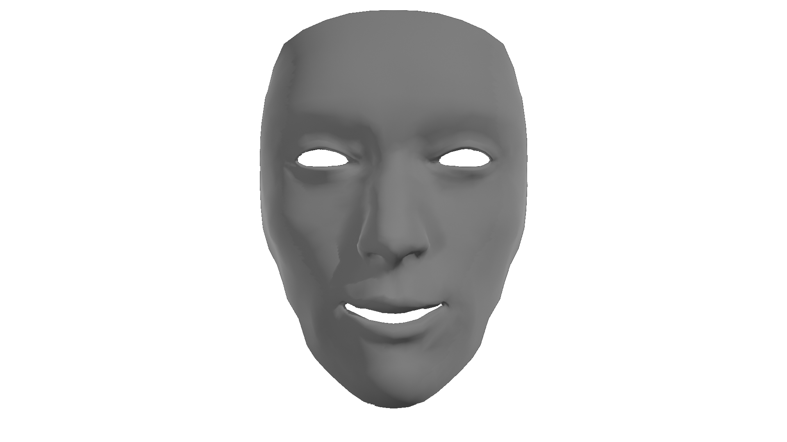

Cours
Si vous voulez vous inscrire pour l'année prochaine, nous vous invitons à nous joindre aux coordonnées indiquées dans l'onglet du même nom.
Groupe enfant: Le groupe enfants propose des spectacles comiques d'environ 30 minutes. Deux
à trois représentations sont réalisées dans l'année, à Claville : un retour d'atelier aux alentours des périodes de Noël
et un spectacle de fin d'année qui se tient souvent en Juin.
Les cours se déroulent de 17h à 18h le mercredi.
La cotisation à l'année est de x euros.
Groupe adulte: Le groupe adulte est constitué d'adultes et d'adolescents qui se produisent en
même temps que les enfants, à Claville, ou ailleurs en fonction des demandes.
Les cours se déroulent le mercredi soir de 19h30 à 21h30.
La cotisation à l'année est de x euros.
